Discover the peaceful beauty, culture, and simple village life of Bodibhanjyang.
Discover MoreAbout BodiBhanjyang
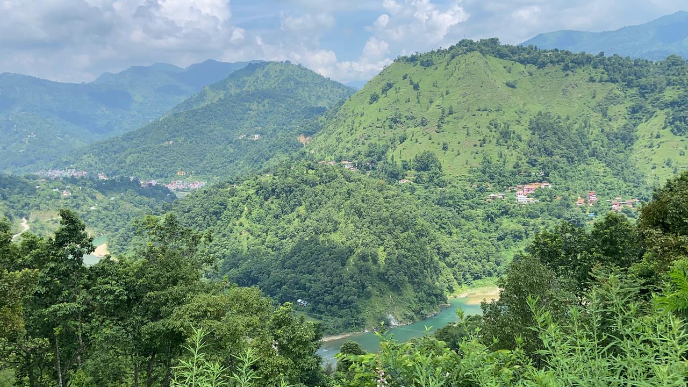
Bodibhanjyang is a scenic, culturally rich locality situated in Waling Municipality,
Ward No. 13,
within the Syangja District of Gandaki Province, Nepal. Nestled amidst the rolling western hills of
the country, this area perfectly blends natural beauty with traditional Nepalese hospitality.
Characterized by its lush greenery, terraced agricultural farmlands, and panoramic views of the
surrounding ridges, Bodibhanjyang serves as a peaceful retreat that captures the authentic spirit of
hilly Nepal. The community is highly vibrant and primarily relies on agriculture, local trade, and
community-driven initiatives, keeping age-old traditions and seasonal festivals deeply alive in
daily life.
Administratively, Bodibhanjyang benefits from being part of Waling Municipality, a region widely
celebrated across Nepal for its forward-thinking approach to sustainable development, clean
initiatives, and "Smart City" planning. While it retains its tranquil, rural charm, the locality is
closely connected to vital regional centers like Jhalunge Bazaar and the main Waling town center,
ensuring access to essential health, education, and transport facilities. Whether you are exploring
its winding hillside paths, engaging with the warm and welcoming locals, or enjoying the crisp
hill-country air, Bodibhanjyang stands as a beautiful example of Syangja's rich cultural fabric and
pristine natural environment.
Our People & Culture
Bodibhanjyang is a small and welcoming village where the Magar community makes up the majority of the local population. The village is also home to Brahmin, Chhetri, and Dalit families, creating a diverse community connected by shared traditions and everyday village life.
The people of Bodibhanjyang value community, togetherness, and respect for their traditions. Different cultures and generations come together during festivals, celebrations, and important occasions throughout the year.
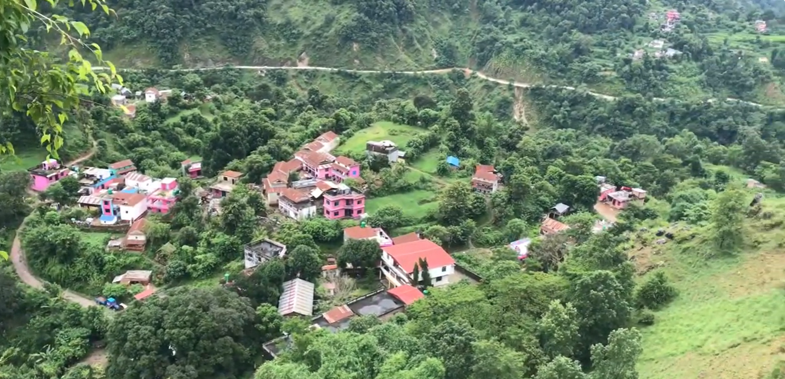
A major festival celebrated with family, blessings, gatherings, and traditional customs.
A beautiful festival of lights, family, music, and traditional celebrations.
A traditional festival marking the beginning of a new seasonal period.
A festival celebrated with traditional songs, dances, gatherings, and cultural traditions.
An important celebration of Magar identity, culture, traditions, and community.
Celebrated to commemorate the birth of Lord Buddha.
THE BEAUTY OF BODIBHANJYANG
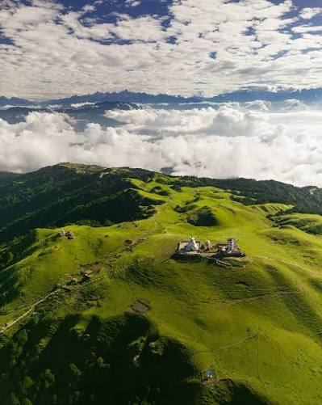
Surrounded by green hills and peaceful landscapes, Bodibhanjyang offers a refreshing escape into nature.
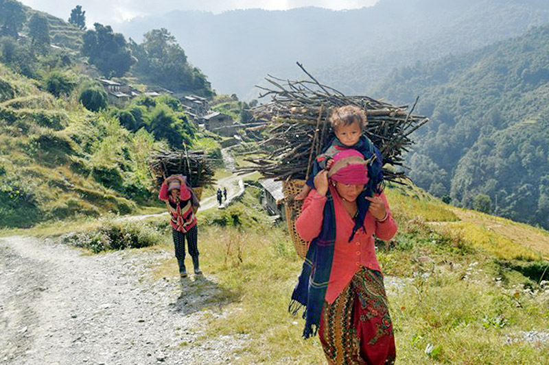
Experience the simple and peaceful lifestyle of the people living in the village.
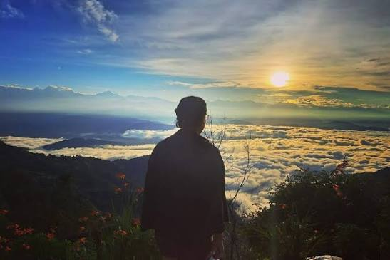
The changing colors of the sky create beautiful moments over the surrounding hills.
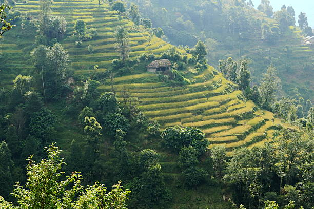
Green fields and traditional farming are an important part of everyday village life.
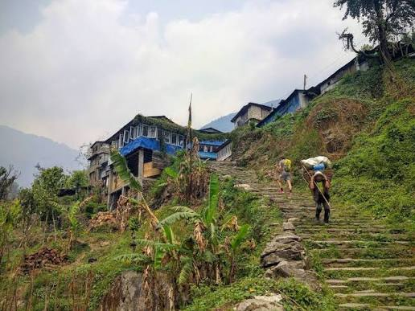
Walk through peaceful trails and discover the natural surroundings of the village.
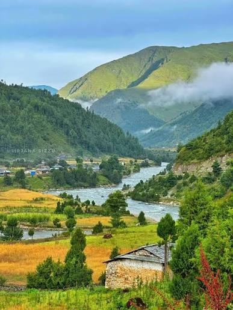
Beautiful views and quiet surroundings make Bodibhanjyang a peaceful place to explore.
Our Traditions & Festivals
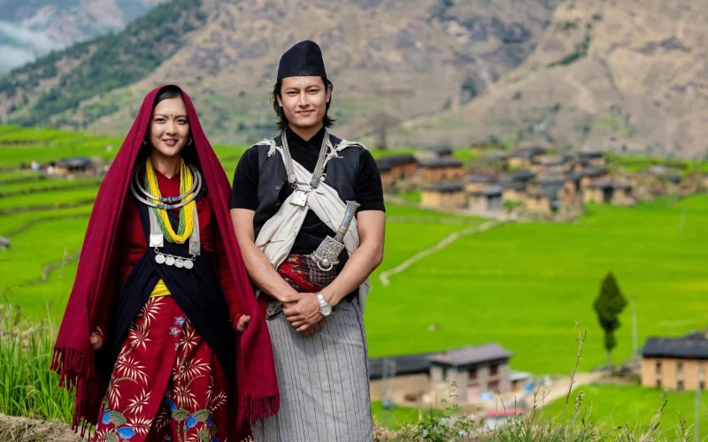
Discover the rich linguistic heritage of the Magar community, spoken and preserved through generations in the village.Magar is spoken at home and in the community. Stories, songs and blessings are passed from grandparents to children in our own mother tongue.
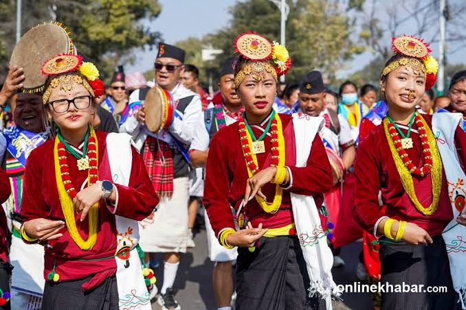
Experience the vibrant and colorful traditional attire of the Magar community, worn during festivals and special occasions. The traditional dress of the Magar community is a symbol of their cultural identity and is often adorned with intricate patterns and designs.
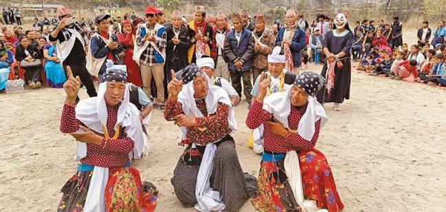
Witness the lively and energetic traditional dances of the Magar community, performed during festivals and celebrations. The dances are often accompanied by traditional music and are a way for the community to express their joy and celebrate their cultural heritage.
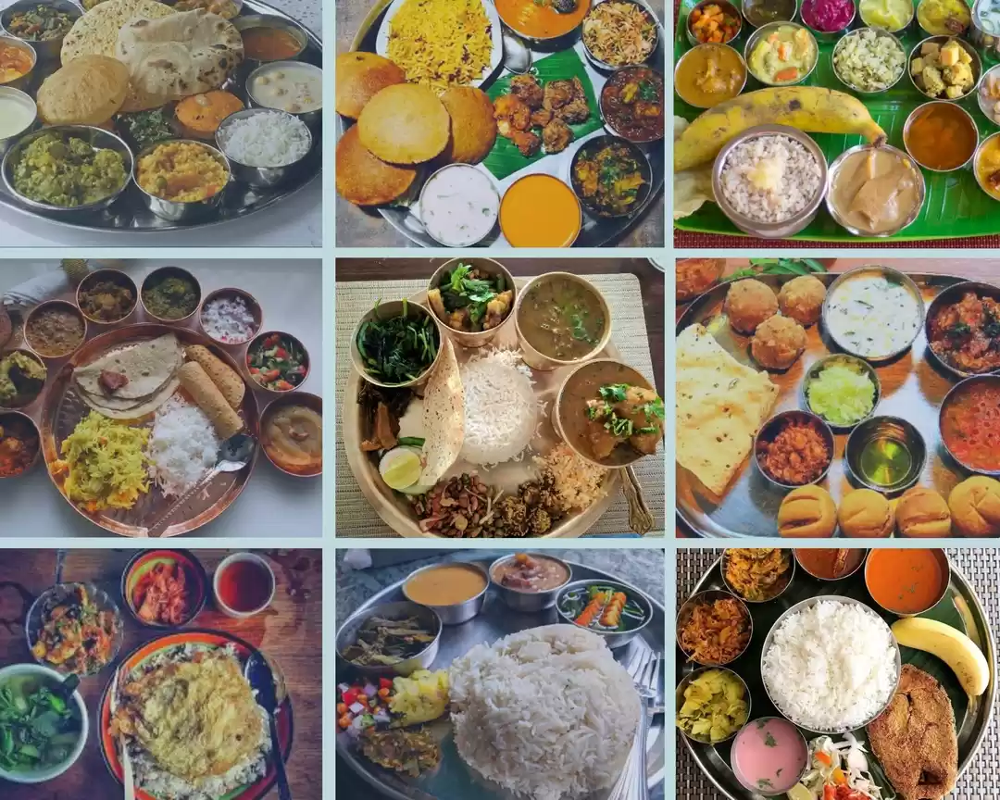
Experience the rich culinary traditions of the Magar community, known for their delicious and hearty dishes. The community is also renowned for their warm hospitality and the way they welcome guests into their homes.
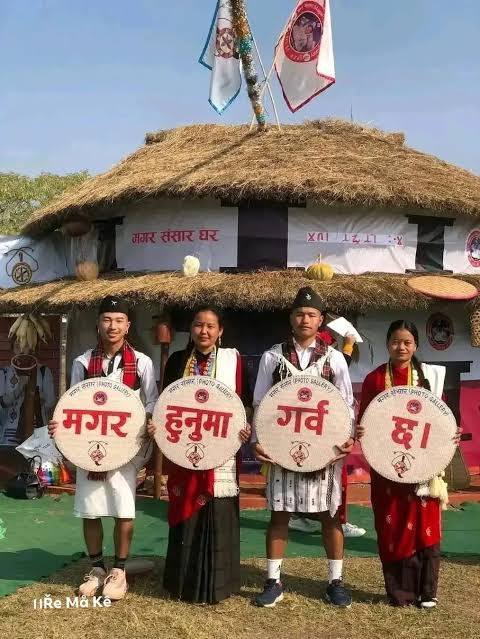
Experience the unique blend of Hindu and Buddhist traditions in the Magar community, reflected in their festivals, rituals, and cultural practices. This harmonious coexistence is a testament to the community's rich spiritual heritage.
Gallery